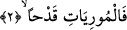
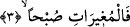
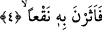

2. (Nallarıyla) çakarak kıvılcım saçanlara,
Atlar, tırnaklarının uçlarıyla taşlara vurarak kıvılcım çıkarırlar. İşte âyette, buna göre
yemin edilmektedir.
Aslında vurma, ateş çıkarmaktan daha önce gelir. Atların nefes alıp verişiyle çıkan
ses ise koşmadan sonradır ve koşmanın bir neticesidir.
Buna göre âyetin mânâsı şöyle olur: Taşlık arazide koştuklarında tırnaklarıyla ateş
çıkaran atlara yemin olsun ki…
3. (Ansızın) sabah baskını yapanlara,
Bir kavme baskın yapmak, atlarla onların üzerine hızla hücûm etmek demektir. “Atın
baskın yapması”, baskın, hücûm ve saldırı esnâsında hızla koşması demektir. Mallarını
yağmalamak, kendilerini öldürmek ve esir etmek için düşmana ansızın saldırmak
mânâsına gelen “iğâra” fiili burada atlara nisbet edilmiştir. Hâlbuki bu yapılanlar
atların değil, onlara binen süvarilerin işidir. Bunun sebebi, düşmana yapılacak ânî
baskınlarda atların esas umde olduğuna işâret etmektir.
Umûmiyetle düşmana hücumlar sabah vakti yapıldığı için, burada da sabah vakti
baskın yapan atlara yemin edilmiştir. Çünkü savaşçılar, düşman kendilerini farketmesin
diye onlara gece yaklaşırlar ve sabahleyin gaflet ânlarında üzerlerine hücum ederler ki
neyi yapıp neyi yapamadıklarını görsünler. Arapların baskından korktukları zaman “Yâ
sabâhâh!” yâni “Ey kavmim! Sabah vakti üzerimize gelecek şerden kendinizi koruyun!”
diye nidâ etmeleri bu âdetten dolayıdır.
4. Orada tozu dumana katanlara,
Yâni o baskın esnâsında tozu dumana katanlara yemin olsun ki... “Toz” anlamı
verdiğimiz “nak‘an” kelimesi, aslında yükselen sese verilen bir isimdir. Toz da
yükseldiği için bu şekilde isimlendirilmiştir. Bu kelime, “suya dalmak” anlamındaki
“en-Nak‘”dan türemiş de olabilir. Sanki toz çıkaran kişi, suya dalar gibi tozun içine
dalmaktadır.
Âyet-i kerimede, atların tozu dumana katmasının, bilhassa sabah vakti olduğu ifâde
edilmiştir. Çünkü gece serinlik sebebiyle nisbeten daha az toz kalkar ve kalkan tozlar